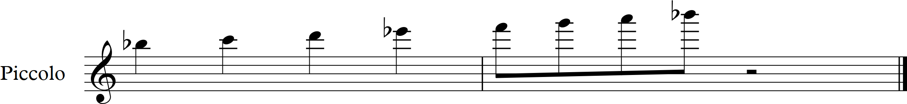
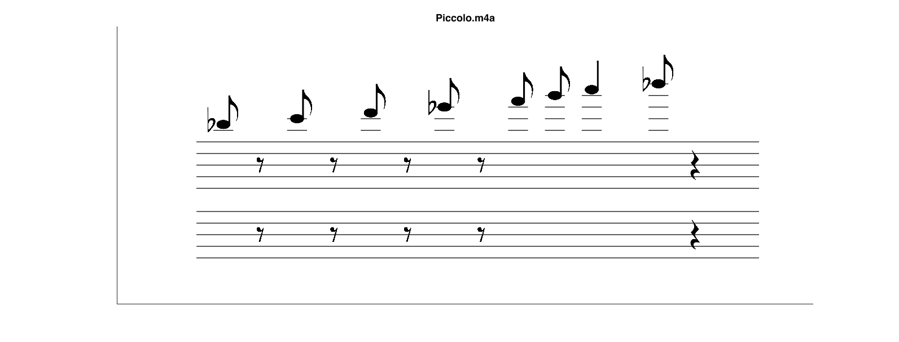
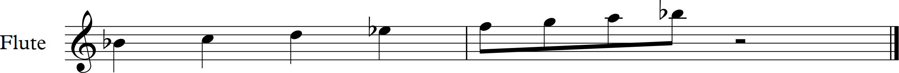
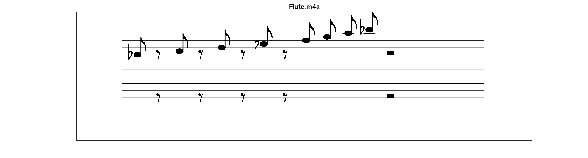
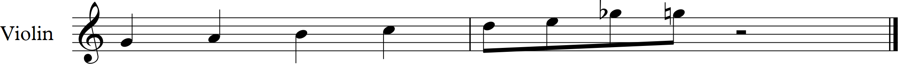
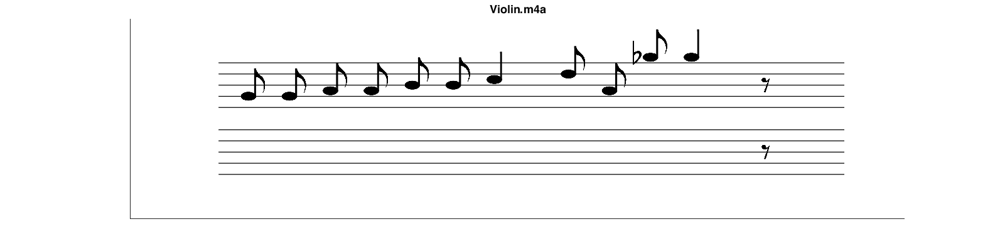
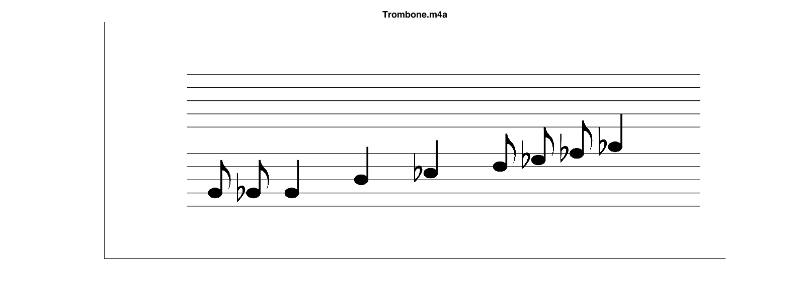
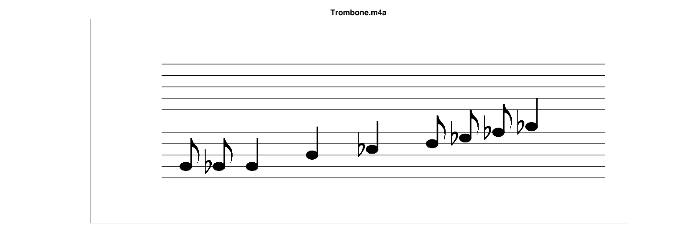

Transcriptions
Testing OverTone with a variety of instruments.
For each instrument, the original part is shown first, followed by OverTone's transcription.


OverTone's piccolo transcription was quite accurate, with only one error when an eigth note was lengthened to a quarter note. This may be because our algorithm falsely detected an additional foot tap.


OverTone perfectly transcribed the notes and rhythms for the flute scale. The quarter notes were interpreted as eigth notes and eighth rests because the musician played them in a short style.


OverTone interpreted several of the violin's quarter notes as two separate, shorter notes, possibly because the violin's sound decayed more slowly than other instruments. Additionally, one of the notes near the end was dropped down several steps, because the algorithm falsely identified a lower frequency spike.

 
